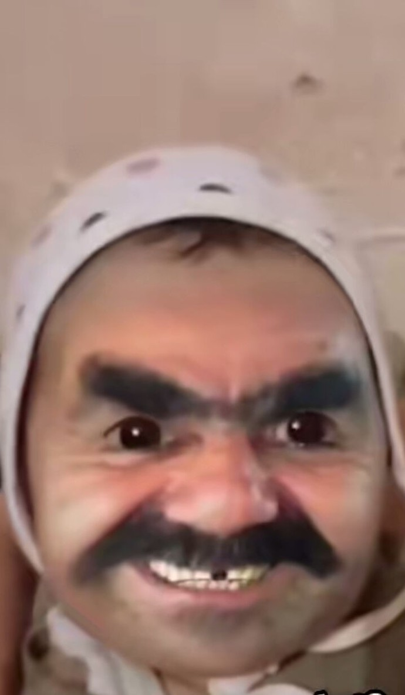

Yıldızların fısıldadığı sırları keşfet
Doğum tarihinizi, saatinizi ve şehrinizi girerek kişisel doğum haritanızı oluşturun.
İki burcun element, gezegen ve doğa uyumunu detaylıca analiz eder.
Kartı çevirmek için üzerine tıkla.
10 soruluk detaylı kişilik testiyle aslında hangi burç olduğunu öğren.
Her burç çiftinin kendine özgü bir hikayesi var.
